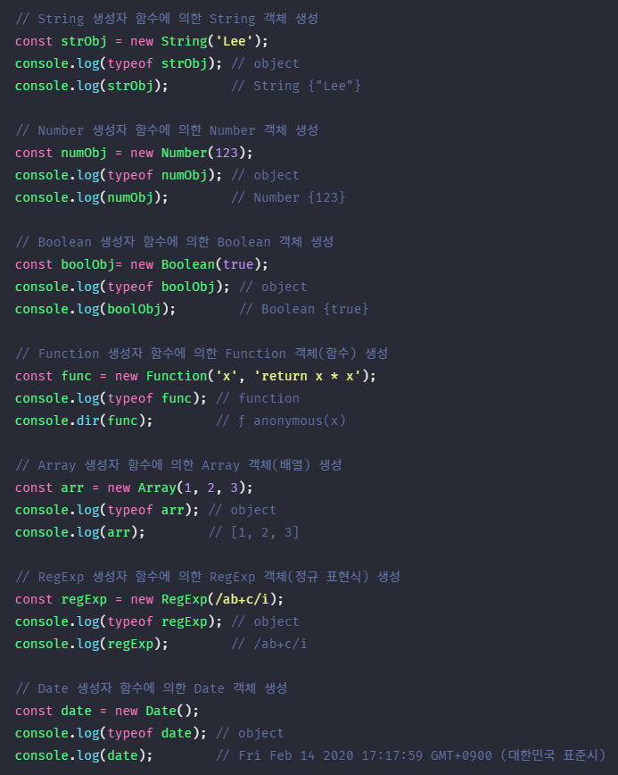

10장에서 객체 리터럴을 사용하여 객체를 생성하는 방법에 대해 살펴보았다. 객체 리터럴에 의한 객체 생성 방식은 객체 생성 방법 중에서 가장 일반적이고 간단한 방법이다. 객체는 객체 리터럴 이외에도 다양한 방법으로 생성할 수 있다.
1. Object 생성자 함수 #
new 연산자와 함께 Object 생성자 함수를 호출하면 빈 객체를 생성하여 반환한다. 빈 객체를 생성한 이후 프로퍼티 또는 메소드를 추가하여 객체를 완성할 수 있다.
생성자 함수란 new 연산자와 함께 호출하여 객체(인스턴스)를 생성하는 함수를 말한다. 생성자 함수에 의해 생성된 객체를 인스턴스라 한다.
자바스크립트는 Object 생성자 함수 이외에도 String, Number, Boolean, Function, Array, Date, RegExp 등의 빌트인(built-in, 내장) 생성자 함수를 제공한다.

반드시 Object 생성자 함수를 사용해 빈 객체를 생성해야 하는 것은 아니다. 객체를 생성하는 방법은 객체 리터럴을 사용하는 것이 더 간편하다. Object 생성자 함수 방식은 특별한 이유가 없다면 그다지 유용해 보이지 않는다.
2. 생성자 함수 #
2.1. 객체 리터럴에 의한 객체 생성 방식의 문제점 #
객체 리터럴에 의한 객체 생성 방식은 직관적이고 간편하다. 하지만 객체 리터럴에 의한 객체 생성 방식은 단 하나의 객체만을 생성한다. 따라서 동일한 프로퍼티를 갖는 객체를 여러 개 생성해야 하는 경우, 매번 같은 프로퍼티를 기술해야 하기 때문에 비효율적이다. 아래 예제를 살펴보자.
객체는 프로퍼티를 통해 객체 고유의 상태(스테이트)를 표현한다. 그리고 메소드를 통해 상태 데이터인 프로퍼티를 참조하고 조작하는 동작(비헤이비어)을 표현한다. 따라서 프로퍼티는 객체마다 프로퍼티 값이 다를 수 있지만 메소드는 내용이 동일한 경우가 일반적이다.
원을 표현한 객체인 circle1 객체와 circle2 객체는 프로퍼티 구조가 동일하다. 단, 객체 고유의 상태 데이터인 radius 프로퍼티의 값은 객체마다 다를 수 있지만 getDiameter 메소드는 완전히 동일하다.
하지만 객체 리터럴에 의해 객체를 생성하는 경우, 프로퍼티 구조가 동일함에도 불구하고 매번 같은 프로퍼티와 메소드를 기술해야 한다.
위 예제처럼 객체가 한두개라면 넘어갈 수도 있겠지만 만약 수십개의 객체를 생성해야 한다면 비효율적일 것이다.
2.2. 생성자 함수에 의한 객체 생성 방식의 장점 #
생성자 함수에 의한 객체 생성 방식은 마치 객체(인스턴스)를 생성하기 위한 템플릿(클래스)처럼 생성자 함수를 사용하여 프로퍼티 구조가 동일한 객체 여러 개를 간편하게 생성할 수 있다.

- this
- this는 객체 자신의 프로퍼티나 메소드를 참조하기 위한 자기 참조 변수이다. this가 가리키는 값, 즉 this 바인딩은 함수 호출 방식에 따라 동적으로 결정된다.
| 함수 호출 방식 | this가 가리키는 값 |
|---|---|
| 일반 함수로서 호출 | 전역 객체 |
| 메소드로서 호출 | 메소드를 호출한 객체(마침표 앞의 객체) |
| 생성자 함수로서 호출 | 생성자 함수가 (미래에) 생성할 인스턴스 |
this에 대해서는 22장에서 자세히 살펴보도록 하고 지금은 이 정도로만 정리하도록 하자.
생성자 함수는 이름 그대로 객체(인스턴스)를 생성하는 함수이다. 하지만 자바와 같은 클래스 기반 객체지향 언어의 생성자와는 다르게 그 형식이 정해져 있는 것이 아니라 일반 함수와 동일한 방법으로 생성자 함수를 정의하고 new 연산자와 함께 호출하면 해당 함수는 생성자 함수로 동작한다.
만약 new 연산자와 함께 생성자 함수를 호출하지 않으면 생성자 함수가 아니라 일반 함수로 동작한다.
2.3. 생성자 함수의 인스턴스 생성 과정 #
먼저 생성자 함수의 함수 몸체에서 수행해야 하는 것이 무엇인지 생각해보자. 생성자 함수의 역할은 프로퍼티 구조가 동일한 인스턴스를 생성하기 위한 템플릿(클래스)으로서 동작하여 인스턴스를 생성하는 것과 생성된 인스턴스를 초기화(인스턴스 프로퍼티 추가 및 초기값 할당)하는 것이다. 생성자 함수가 인스턴스를 생성하는 것은 필수이고, 생성된 인스턴스를 초기화하는 것은 옵션이다. 아래 예제를 살펴보자.
생성자 함수 내부의 코드를 살펴보면 this에 프로퍼티를 추가하고 필요에 따라 전달된 인수를 프로퍼티의 초기값으로서 할당하여 인스턴스를 초기화한다. 하지만 인스턴스를 생성하고 반환하는 코드는 보이지 않는다.
자바스크립트 엔진은 암묵적인 처리를 통해 인스턴스를 생성하고 반환한다. new 연산자와 함께 생성자 함수를 호출하면 자바스크립트 엔진은 아래와 같은 과정을 거쳐 암묵적으로 인스턴스를 생성하고 인스턴스를 초기화한 후, 인스턴스를 반환한다.
1. 인스턴스 생성과 this 바인딩
암묵적으로 빈 객체가 생성된다. 이 빈 객체가 바로 (아직 완성되지는 않았지만) 생성자 함수가 생성한 인스턴스이다. 그리고 암묵적으로 생성된 빈 객체, 즉 인스턴스는 this에 바인딩된다. 생성자 함수 내부의 this가 생성자 함수가 생성할 인스턴스를 가리키는 이유가 바로 이것이다. 이 처리는 함수 몸체의 코드가 한줄씩 실행되는 런타임 이전에 실행된다.
- 바인딩
- 바인딩이란 식별자와 값을 연결하는 과정을 의미한다. 예를 들어 변수는 할당에 의해 값이 바인딩된다.
2. 인스턴스 초기화
생성자 함수에 기술되어 있는 코드가 한줄씩 실행되어 this에 바인딩되어 있는 인스턴스를 초기화한다. 즉, this에 바인딩되어 있는 인스턴스에 프로퍼티나 메소드를 추가하고 생성자 함수가 인수로 전달받은 초기값을 인스턴스 프로퍼티에 할당하여 초기화하거나 고정값을 할당한다. 이 처리는 개발자가 기술한다.

3. 인스턴스 반환
생성자 함수 내부의 모든 처리가 끝나면 완성된 인스턴스가 바인딩된 this가 암묵적으로 반환된다.

만약 this가 아닌 다른 객체를 명시적으로 반환하면 this가 반환되지 못하고 return 문에 명시한 객체가 반환된다.
하지만 명시적으로 원시값을 반환하면 원시 값 반환은 무시되고 암묵적으로 this가 반환된다.
생성자 함수 내부에서 명시적으로 this가 아닌 다른 값을 반환하는 것은 생성자 함수의 기본 동작을 훼손한다. 따라서 생성자 함수 내부에서 return 문을 반드시 생략해야 한다.
2.4. 내부 메소드 [[Call]]과 [[Construct]] #
함수 선언문 또는 함수 표현식으로 정의한 함수는 일반적인 함수로서 호출할 수 있는 것은 물론 생성자 함수로서 호출할 수 있다. 생성자 함수로서 호출한다는 것은 new 연산자와 함께 호출하여 객체를 생성하는 것을 의미한다.
함수는 객체이므로 일반 객체와 동일하게 동작할 수 있다. 함수 객체는 일반 객체가 가지고 있는 내부 슬롯과 내부 메소드를 모두 가지고 있기 때문이다.
함수 객체는 일반 객체가 가지고 있는 내부 슬롯과 내부 메소드은 물론, 함수로서 동작하기 위해 함수 객체만을 위한 [[Environment]], [[FormalParameters]] 등의 내부 슬롯과 [[Call]], [[Constructor]]와 같은 내부 메소드를 추가적으로 가지고 있다.
함수가 일반 함수로서 호출되면 함수 객체의 내부 메소드 [[Call]]가 호출되고 new 연산자와 함께 생성자 함수로서 호출되면 내부 메소드 [[Construct]]가 호출된다.
functionfoo() {}
// 일반적인 함수로서 호출: [[Call]]이 호출된다.
foo();
// 생성자 함수로서 호출: [[Construct]]가 호출된다.
new foo();
내부 메소드 [[Call]]을 갖는 함수 객체를 callable이라 하며, 함수 객체 만을 위한 내부 메소드 [[Construct]]를 갖는 함수 객체를 constructor, [[Construct]]를 갖지 않는 함수 객체를 non-constructor라고 부른다. callable은 호출할 수 있는 객체, 즉 함수를 말하며, constructor는 생성자 함수로서 호출할 수 있는 객체를 의미한다.
호출할 수 없는 객체는 함수 객체가 아니므로 함수로서 기능하는 객체, 즉 함수 객체는 반드시 callable이여야 한다. 따라서 모든 함수 객체는 내부 메소드 [[Call]]을 갖고 있으므로 호출할 수 있다. 하지만 모든 함수 객체가 [[Construct]]를 갖지는 않는다. 다시 말해, 함수 객체는 constructor일 수도 있고 non-constructor일 수 있다.
결론적으로 함수 객체는 callable이면서 constructor이거나 callable이면서 non-constructor이다. 즉, 모든 함수 객체는 호출할 수 있지만 모든 함수 객체를 생성자 함수로서 호출할 수 있는 것은 아니다.

자바스크립트 엔진이 어떻게 constructor와 non-constructor를 구분하는지 살펴보도록 하자.
2.5. constructor와 non-constructor의 구분 #
자바스크립트 엔진이 함수 정의를 평가하여 함수 객체를 생성할 때, 함수 정의 방식에 따라 함수를 constructor와 non-constructor로 구분한다.
- constructor: 함수 선언문, 함수 표현식, 클래스(클래스도 함수다)
- non-constructor: 메소드(ES6 메소드 축약 표현), 화살표 함수
이때 주의할 것은 ECMAScript 사양에서 메소드로 인정하는 범위가 일반적인 의미의 메소드보다 좁다는 것이다. 아래 예제를 살펴보자.
함수를 프로퍼티 값으로 사용하면 일반적으로 메소드로 통칭한다. 하지만 ECMAScript 사양에서 메소드란 ES6의 메소드 축약 표현만을 의미한다. 다시 말해 함수가 어디에 할당되어 있는지에 따라 메소드인지를 판단하는 것이 아니라 함수 정의 방식에 따라 constructor와 non-constructor를 구분한다.
위 예제와 같이 일반 함수, 즉 함수 선언문과 함수 표현식으로 정의된 함수만이 constructor이고 ES6의 화살표 함수와 메소드 축약 표현으로 정의된 함수는 non-constructor이다.
함수를 일반 함수로서 호출하면 함수 객체의 내부 메소드 [[Call]]가 호출되고 new 연산자와 함께 생성자 함수로서 호출하면 내부 메소드 [[Construct]]가 호출된다. non-constructor인 함수 객체는 내부 메소드 [[Construct]]를 갖지 않는다. 따라서 non-constructor인 함수 객체를 생성자 함수로서 호출하면 에러가 발생한다
주의할 것은 생성자 함수로서 호출될 것을 기대하고 정의하지 않은 일반 함수(callable이면서 constructor)에 new 연산자를 붙여 호출하면 생성자 함수처럼 동작할 수 있다는 것이다.
2.6. new 연산자 #
일반 함수와 생성자 함수에 특별한 형식적 차이는 없다. new 연산자와 함께 함수를 호출하면 해당 함수는 생성자 함수로 동작한다. 다시 말해, 함수 객체의 내부 메소드 [[Call]]이 호출되는 것이 아니라 [[Construct]]가 호출된다. 단, new 연산자와 함께 호출하는 함수는 non-constructor가 아닌 constructor이여야 한다.
반대로 new 연산자 없이 생성자 함수를 호출하면 일반 함수로 호출된다. 다시 말해, 함수 객체의 내부 메소드 [[Construct]]가 호출되는 것이 아니라 [[Call]]이 호출된다.
Circle 함수를 new 연산자와 함께 생성자 함수로서 호출하면 함수 내부의 this는 Circle 생성자 함수가 생성할 인스턴스를 가리킨다. 하지만 Circle 함수를 일반적인 함수로서 호출하면 함수 내부의 this는 전역 객체 window를 가리킨다.
위 예제의 Circle 함수는 일반 함수로서 호출되었기 때문에 Circle 함수 내부의 this는 전역 객체 window를 가리킨다. 따라서 radius 프로퍼티와 getDiameter 메소드는 전역 객체의 프로퍼티와 메소드가 된다.
일반 함수와 생성자 함수에 특별한 형식적 차이는 없다. 따라서 생성자 함수는 일반적으로 첫문자를 대문자로 기술하는 파스칼 케이스로 명명하여 일반 함수와 구별할 수 있도록 노력한다.
2.7. new.target #
생성자 함수가 new 연산자 없이 호출되는 것을 방지하기 위해 파스칼 케이스 컨벤션을 사용한다 하더라도 실수는 언제나 발생할 수 있다. 이러한 위험성을 회피하기 위해 ES6에서는 new.target을 지원한다.
new.target은 this와 유사하게 모든 함수 내부에서 암묵적인 지역 변수와 같이 사용되며 메타 프로퍼티라고 부른다. IE는 new.target을 지원하지 않으므로 주의하기 바란다.
함수 내부에서 new.target를 사용하면 new 연산자와 함께 함수가 호출되었는지 확인할 수 있다. 함수가 new 연산자와 함께 호출되면 함수 내부의 new.target은 함수 자신을 가리킨다. new 연산자 없이 호출된 함수 내부의 new.target은 undefined이다.
- 스코프 세이프 생성자 패턴
- new.target은 ES6에서 도입된 최신 문법으로 IE에서는 지원하지 않는다. new.target을 사용할 수 없는 상황이라면 스코프 세이프 생성자 패턴을 사용할 수 있다.
new 연산자와 함께 생성자 함수에 의해 생성된 객체(인스턴스)는 프로토타입에 의해 생성자 함수와 연결된다. 이를 이용해 new 연산자와 함께 호출되었는지를 확인할 수 있다. 프로토타입과 instanceof 연산자에 대해서는 19장에서 살펴보자!
대부분의 빌트인 생성자 함수(Object, String, Number, Boolean, Function, Array, Date, RegExp, Promise 등)는 new 연산자와 함께 호출되었는지를 확인한 후 적절한 값을 반환한다.
예를 들어, Object 또는 Function 생성자 함수는 new 연산자 없이 호출해도 new 연산자와 함께 호출했을 때와 동일하게 동작한다.
하지만 String, Number, Boolean 생성자 함수는 new 연산자와 함께 호출했을 때 String 객체를 생성하여 반환하지만 new 연산자 없이 호출하면 문자열, 숫자, 불리언 값을 반환한다. 이를 통해 데이터 타입을 변환하기도 한다.